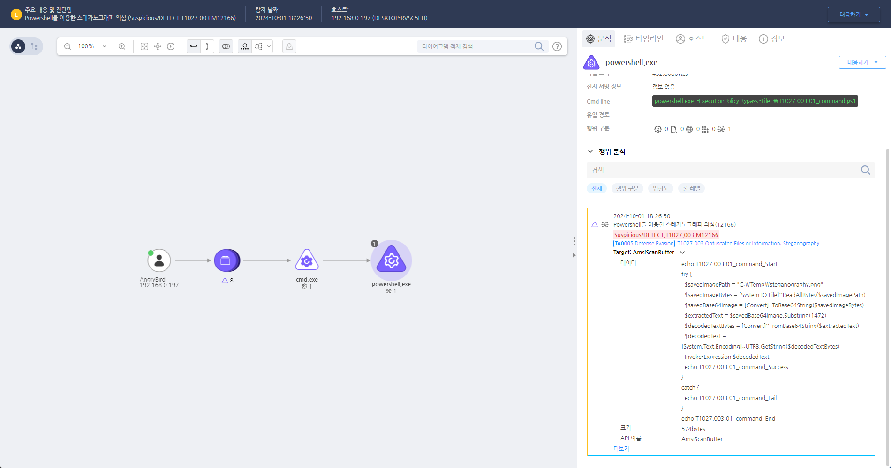

T1027.003.01 Obfuscated Files or Information: Steganography
D3FEND
MITRE ATT&CK 액션을 기준으로 대응 방안을 작성
Detection
Action = "AMSISCAN" AND
CurrentProcess = "powershell.exe" AND
AMSISCANDATA = "[System.IO.File]::ReadAllBytes(" AND
AMSISCANDATA = "[Convert]::FromBase64String(" AND
AMSISCANDATA = "Invoke-Expression" AND
AMSISCAN_DATA = "Substring("
Detection(EDR)

https://172.18.10.125:8903/#/analysis/alert/66fbc1c7002dc79400000004
Response
해당 행위를 수행한 프로세스를 종료합니다.
Mitigations
악성 코드 탐지 및 분석 강화
- 정적 및 동적 분석 도구 사용: 패킹된 악성 파일을 분석할 수 있는 정적 분석(파일을 실행하지 않고 내부 분석) 및 동적 분석(파일을 실행하여 동작 분석) 도구를 사용합니다. Sandboxing(샌드박스 환경)에서 실행하여 악성 파일의 동작을 추적합니다.
- 패킹 해제 도구 사용: 악성 파일이 패킹된 경우, 이를 자동으로 풀어내는 도구를 사용하여 원본 파일을 복원하고 분석합니다. 예를 들어, PEiD, UPX와 같은 도구를 사용하여 파일의 패킹을 해제합니다.
행위 기반 탐지
- 행위 분석 강화: 패킹된 악성 파일이 실행되기 전에 나타나는 행위 패턴을 추적하여 탐지합니다. 예를 들어, 악성 파일이 파일 시스템이나 레지스트리를 수정하는 등의 비정상적인 행동을 감시하여 이를 차단합니다.
- 동적 분석 및 샌드박스: 악성 파일을 샌드박스 환경에서 실행하여 파일의 행동을 분석하고, 불법적인 네트워크 활동이나 시스템 호출을 모니터링하여 의심스러운 활동을 탐지합니다.
안티 패킹 및 디패킹 기술 사용
- 안티 패킹 기술: 보안 소프트웨어에서 패킹된 파일을 탐지하고 자동으로 해제하거나 복원하는 기술을 사용하여, 패킹된 악성 파일을 빠르게 분석하고 탐지할 수 있습니다.
- 디패킹 솔루션: 디패킹 솔루션을 사용하여 악성 파일을 실행하지 않고도 패킹된 파일을 복원하고, 원본 악성 코드가 무엇인지 식별합니다.
파일 및 메모리 모니터링 강화
- 파일 시스템 모니터링: 패킹된 악성 파일이 생성되거나 수정될 때 이를 실시간으로 모니터링하고, 파일 시스템에 나타나는 의심스러운 파일을 추적합니다.
- 메모리 분석: 패킹된 파일은 메모리에서 실행될 때 암호화된 형태로 나타날 수 있습니다. 메모리 분석 도구(예: Volatility)를 사용하여 메모리 덤프에서 악성 코드의 흔적을 찾아냅니다.
파일 무결성 검사
- 파일 무결성 검사 도구 사용: HIDS(Host-based Intrusion Detection System)나 파일 무결성 모니터링 도구를 사용하여 파일 시스템의 변조를 감지하고, 파일이 암호화되거나 패킹된 경우 이를 기록합니다.
- 해시값 비교: 패킹된 파일을 복원 후, 해시값을 비교하여 정상적인 파일인지 아닌지를 확인하고, 이상 징후를 감지합니다.
네트워크 보안 강화
- 암호화된 네트워크 트래픽 탐지: 악성 파일이 네트워크를 통해 전송될 때 암호화된 트래픽을 탐지할 수 있는 기술을 사용하여, SSL/TLS를 통한 암호화된 악성 파일의 전송을 해독하고 분석합니다.
- 패턴 매칭 필터링: DPI (Deep Packet Inspection)와 같은 기술을 사용하여 암호화된 트래픽 내에서 패킹된 악성 코드가 포함된 패턴을 탐지합니다.
패킹 및 압축 도구 관리
- 사용자 권한 관리: 압축 및 패킹 도구(예: UPX, ASPack 등)의 사용을 제어하고, 일반 사용자에게는 이러한 도구를 사용할 수 없도록 제한합니다. 또한, 시스템 내에서 패킹 도구의 존재 여부를 감지하고 제거합니다.
- 애플리케이션 제어 및 화이트리스트 사용: AppLocker 또는 Device Guard와 같은 응용 프로그램 제어 기능을 사용하여 허용된 애플리케이션만 실행되도록 하고, 화이트리스트에 등록되지 않은 압축 및 패킹 도구의 실행을 방지합니다.
정기적인 보안 패치 및 업데이트
- 소프트웨어 보안 패치 적용: 패킹된 악성 파일은 시스템의 취약점을 악용할 수 있습니다. 따라서 시스템과 소프트웨어의 보안 패치를 정기적으로 적용하여 알려진 취약점을 차단합니다.
- 취약점 스캔: 패킹된 악성 파일이 특정 취약점을 악용할 가능성이 있으므로, 시스템에 대한 취약점 스캔을 수행하고 보안 패치를 빠르게 적용합니다.
운영 체제 및 보안 설정 강화
- 기본 보안 설정 적용: Windows Defender 또는 EDR 솔루션을 사용하여 패킹된 악성 코드를 탐지하고 차단하는 기능을 활성화합니다.
- 보안 설정 검토: 사용자 계정 제어(UAC), 제어된 폴더 액세스와 같은 보안 설정을 통해 파일 실행 및 시스템 리소스 접근을 제한합니다.
사용자 교육 및 인식 제고
- 악성 이메일 및 링크 교육: 사용자가 의심스러운 첨부파일이나 링크를 클릭하여 패킹된 악성 파일을 실행하지 않도록 교육합니다.
- 사회 공학 공격 방지: 사용자들이 사회 공학적 공격에 대응할 수 있도록 훈련시켜, 패킹된 악성 코드가 포함된 이메일이나 파일을 열지 않도록 합니다.
Affected Techniques
Action 실행시 함께 영향을 받는 다른 Techniqes
| D3FEND |
| D3-FIM File Integrity Monitoring |
| D3-SCA System Call Analysis |
| D3-DA Dynamic Analysis |